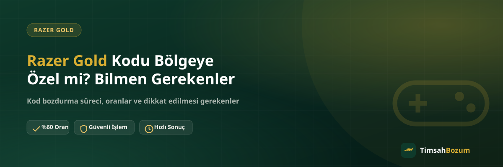

Elindeki Razer Gold kodunu bozdurmadan önce aklına "bu kod bölgeye özel mi, farklı bir ülkeden alınmış olabilir mi" sorusu gelmiş olabilir. Bu makul bir soru, çünkü dijital oyun kodlarının çoğu belirli bir ülke veya mağaza için üretilir. Bu yazıda bölge kilidinin ne anlama geldiğini, kodunun hangi bölgeye ait olduğunu nasıl anlayabileceğini ve bunun bozum sürecini etkileyip etkilemediğini anlatıyoruz.
Razer Gold Kodu Bölgeye Özel mi?
Razer Gold kodları genel olarak satıldığı mağaza veya platformun bölgesine göre üretilir. Bir kod belirli bir ülke mağazasından alınmışsa, o kodun kullanım alanı da genellikle o bölgeyle ilişkilendirilir. Bu, dijital oyun kodlarının birçoğunda görülen standart bir uygulama ve Razer Gold'a özgü bir durum değil.
Bölge Kilidi Nasıl Çalışır?
Bölge kilidi, kodun üretildiği mağazanın sistemine bağlı bir ayar olarak işler. Kod satın alındığı andan itibaren belirli bir bölgeye göre tanımlanır ve bu bilgi kodun kendisinde veya satın alındığı platformun kaydında bulunur. Sen bu süreci değiştiremezsin, sadece elindeki kodun hangi bölgeye ait olduğunu bilmen yeterli.
Kodumun Hangi Bölgeye Ait Olduğunu Nasıl Anlarım?
Kodu satın aldığın mağazanın adını veya kartın üzerindeki/paketindeki bölge bilgisini kontrol edebilirsin. Fiziksel bir kart aldıysan kutunun üzerinde genellikle bir ülke veya bölge ismi yer alır. Dijital olarak satın aldıysan, satın alma işleminin yapıldığı mağazanın hangi ülkeye kayıtlı olduğunu hatırlaman da ipucu verir. Emin olamıyorsan bunu WhatsApp'tan sorarak da netleştirebilirsin.
Bölge Kilidi Neden Uygulanır?
Dijital oyun kodlarında bölge kilidi, tek bir platforma özgü bir durum değil; birçok oyun ve içerik mağazası aynı sistemi kullanır. Mağazalar kodları belirli bir ülke için dağıtım anlaşmalarına göre üretir, bu yüzden bir kod satın alındığı mağazanın kayıtlı olduğu bölgeyle ilişkilendirilir. Bu durum kodun değerini değil, hangi platform hesabında kullanılabileceğini etkiler.
Türkiye'den Alınan Kodlar Genelde Hangi Bölgeye Ait Olur?
Türkiye'deki yetkili satıcılardan veya yerel mağazalardan alınan Razer Gold kodları genellikle Türkiye bölgesine kayıtlı olarak üretilir. Bu, bozum için elinde kod olan kullanıcıların çoğunun karşılaştığı en yaygın senaryo. Kodun farklı bir ülkeden alınmış olması da mümkün, bu durumda yukarıda bahsedilen kontrolleri yapman yeterli.
Bölgeye Özel Kod Bozdurmak Güvenilir mi?
Kodun hangi bölgeye ait olduğu, bozum işleminin güvenilirliğini etkilemez. Razer Gold bozdurma süreci, kodun kendisinin geçerli ve kullanılmamış olmasına dayanır; bölge bilgisi bu değerlendirmenin bir parçası değildir. Önemli olan, kodu paylaşırken doğru ve eksiksiz bilgi vermen.
Bölge Farkı Bozum Sürecini Uzatır mı?
Hayır, bölge farkı tek başına süreci uzatmaz. Kod bilgisi eksiksiz paylaşıldığında işlem, diğer Razer Gold kodlarıyla aynı şekilde ilerler: kod paylaşılır, oran teyit edilir, onay sonrası ödeme WhatsApp üzerinden görüşülen yöntemle yapılır.
Bölgeye Özel Kod Bozdururken Ne Paylaşman Gerekir?
Bölge bilgisini bilmen süreci hızlandırabilir ama şart değildir. Asıl ihtiyaç duyulan kodun kendisi. Kodu paylaşırken karakterlerin tam ve doğru olmasına özen göstermen, bölge bilgisinden daha belirleyici bir faktör.
Bölge Bilgisini Paylaşmam Gerekir mi?
Zorunlu değil. Elinde bu bilgi varsa paylaşman işlemi daha hızlı netleştirebilir, ama bilmiyorsan da kod bilgini paylaşarak süreci başlatabilirsin. Gerekirse bölge ile ilgili soru WhatsApp üzerinden görüşme sırasında netleştirilir.
Bölgeye Özel Kodlarla İlgili Sık Yapılan Hatalar
En sık karşılaşılan durum, kodun hangi bölgeye ait olduğunu bilmeden "bu kod geçerli mi" diye tereddüt edip işlemi hiç başlatmamak. Bölge bilgisi bilinmediği için işlemden çekinmek gerekmiyor; kod bilgisini paylaşman, sürecin başlaması için yeterli.
Yanlış Bölge Bilgisi Paylaşırsam Ne Olur?
Yanlış veya eksik bir bölge bilgisi paylaşman, kodun kendisi doğruysa işlemi iptal etmez. En fazla bir doğrulama sorusu gelmesine yol açabilir, bu da süreci kısa bir süre geciktirir ama sonucu değiştirmez.
Bölgeye Özel Kodu Hesabına Yüklemeden Bozdurabilir misin?
Evet. Bozum işlemi için kodu herhangi bir oyun hesabına yüklemene veya aktif etmene gerek yok. Kodun bölgesiyle uyumlu bir hesabın olup olmadığı bozum sürecini ilgilendirmez, çünkü istenen tek şey kodun kendisi. Kodu hesabına yüklersen zaten bakiyeye dönüşür ve kod tabanlı bozum için kullanılamaz hale gelir, bu yüzden kodu hiç kullanmadan bozdurmak en doğrusu.
Birden Fazla Bölgeden Kodun Varsa Tek Seferde Bozdurabilir misin?
Evet. Elinde farklı ülkelere ait birden fazla Razer Gold kodu varsa bunların hepsini tek mesajda toplu şekilde bildirmen süreci hızlandırır. Her kodu ayrı ayrı, aralıklarla paylaşmak yerine hepsini bir arada göndermek, karşı taraftaki hattın bilgileri tek seferde değerlendirmesini sağlar.
Bölgeye Özel Olmak Kodun Değerini Değiştirir mi?
Hayır, kodun bölgesi onun üzerindeki parasal değeri değiştirmez. Bozum oranı kodun tutarına göre belirlenir, kodun hangi ülke mağazasından alındığına göre değil. Güncel referans oranımız %70, ama oranlar değişebildiği için işlem öncesi WhatsApp'tan teyit etmen en doğrusu.
Özetle, Razer Gold kodları genellikle satın alındığı mağazanın bölgesine göre üretilir ama bu bilgi bozum sürecini zorlaştırmaz; önemli olan kodun geçerli ve kullanılmamış olması. Bölgesini bilmiyor olsan da, tek veya birden fazla kodun olsa da, ihtiyacın olan tek şey kod bilgisini eksiksiz paylaşmak. Elindeki Razer Gold kodunun bölgesi ne olursa olsun, kod bilgini WhatsApp hattımıza yazarak süreci başlatabilirsin.
İlgili Yazılar
- Razer Gold Kodu Nasıl Bozdurulur? Adım Adım Rehber
- Razer Gold Kodu Kullanılmışsa Ne Olur?
- Razer Gold Kodunu Güvenle Bozdurmanın Yolları